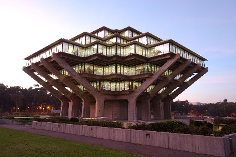
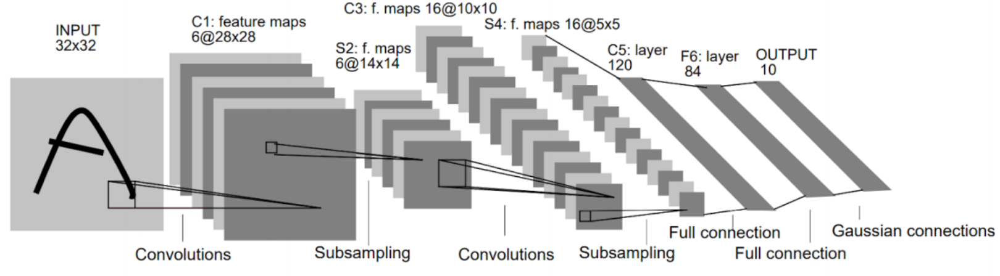
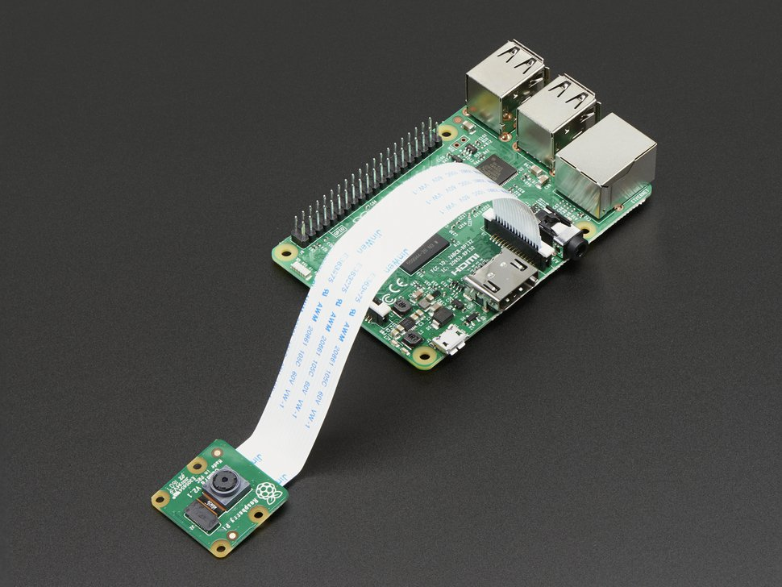
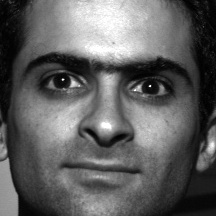
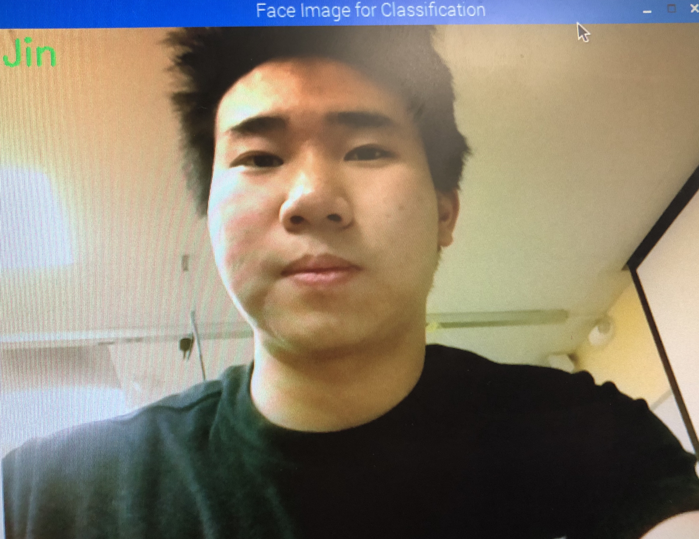

Project Break Down
Phase 1:
- Image Processing with CV2
- Convolutional Neural Network(CNN)
Phase 2:
- Set up Raspberry Pi
- Real-time Face Detection
- Data Collection
Phase 3:
- Fine Tuning CNN
- Connect an IoT Module
Phase 1:
Image Processing with CV2
Get familiar with OpenCV by doing some simple image processing
techniques such as "resized", "recolored", and "drawn onto an image".
The goal is to process the orignal Geisel library with the following
modification:
- Read a color image (“geisel.jpg”) as grayscale
- Resize it to half of its original dimensions
- Draw a 100x100 white box at the center of the image
- Save the new image to a local directory.

Fig.1 Image before processing.
Fig.2 Image after processing.
Convolutional Neural Network(CNN)
Get Familiar with CNN and Keras by writing a modified LeNet in Keras.

Fig.3 The architecture of the modified LeNet.
Network Architecture:
- Input dimensions: 32x32x1
- C1: Convolutional layer, output: 6 layers of 28x28 feature maps, filter size: 5x5, strides: 1 both
horizontally and vertically, activation function: sigmoid
- S2: Max pooling layer, output: 6 layers of 14x14 feature maps, pooling size: 2x2, strides: 2 both
horizontally and vertically
- C3: Convolutional layer, output: 16 layers of 10x10 feature maps, filter size: 5x5, strides: 1 both
horizontally and vertically, activation function: sigmoid
- S4: Max pooling layer, output: 16 layers of 5x5 feature maps, pooling size: 2x2, strides: 2 both
horizontally and vertically
- C5: Convolutional layer, output: 120 layers of 1x1 feature maps, filter size: 5x5, activation function:
sigmoid
- F6: Fully connected layer, output 84dimensional vector, activation function: tanh
- F7: Fully connected layer, output 10dimensional vector, activation function: softmax
Phase 2:
Set up Raspberry Pi
Set up the environment of the Raspberry Pi, including necessary
libraries, such as OpenCV and Tensorflow. Then, add the Raspberry Pi
camera module.

Fig.3 The architecture of the modified LeNet.
Real-time Face Detection
Apply the face detection method in OpenCV to detect faces in
realtime videos, taken by Raspberry PI camera. OpenCV face detection is
based on the ViolaJones Haar Cascade face detection algorithm. Then,
we need tograyscale video with 120x160 (height x width) dimensions,
with a white box on faces.
Data Collection
Next step is to prepare some good data sets, which involve 3 steps.
- Find public face datasets onling
- Prepare personal face data.
- Sort data into 3 set, training, validation, and test.
We found public datasets on
http://www.face-rec.org/databases, which involve 17 differnet
classes, labeled 00~16 respectively.
Then, we wrote a python program with Raspberry Pi camera that automatically takes
every seconds. Then the photo would be turn into greyscale, resized, and saved.
All we need to do after is let the camera detect our face, collecting our face data.
when taking pictures, we want a full range of angle and emotion, so that
the model can be well-trained.
Last, we wrote another program called "Organizer" that shaffle and sort
the data into 3 subsets, Traing, Validation, Test with 70%, 20%,
10% respectively.

Fig.4 The facial data found on http://www.face-rec.org/databases
Fig.5 Sample of personal data with emotions.
Phase 3:
Fine Tuning CNN
WeWhen training a network, we have to option, training from scratch and fine tuning from a trained model.
Training from scratch will take a lot
longer than fine tuning. To finetune with our own data, we will need the weights from a pretrained model. In
this project, we will use a network called VGG16. You can find an example here: https://gist.github.com/baraldilorenzo/07d7802847aaad0a35d3
To speed up the trainning process, which takes a long time. We used
AWS(Amazon Web Service), which has the computation power to make the
process quick. After the model is trained well, we save the weight.
Last, to make sure our model and weights are ready to go, we run the
test set. The accuracy ends about 97%, which means the model is well-trained.
Connect an IoT Module

Fig.5 The correct labeled data picture of JIN!
Last piece of this projecti is connect everything together. We need
to host a server with Flask, Python library for web services that
process the image that is taken by Rapsberry Pi Camera. After the Camera
detect the face, it will ask if the photo is okay. If it is, then the image
would be sent to the AWS server.py, which would return with the name of the
face. Beautifully, we would have a correct identity on our pretty face.